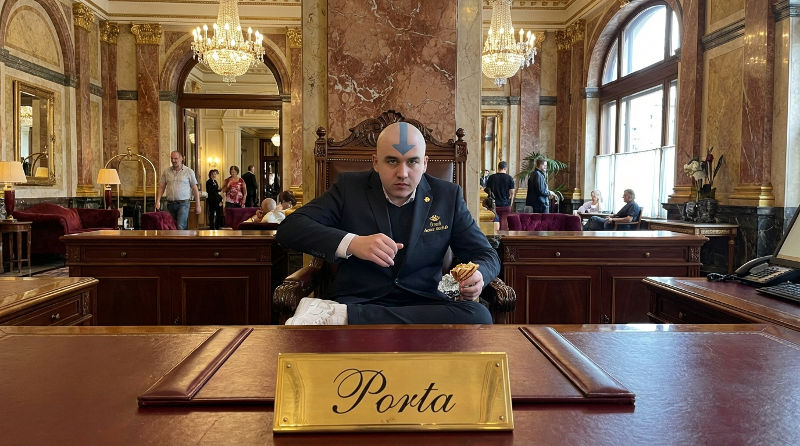
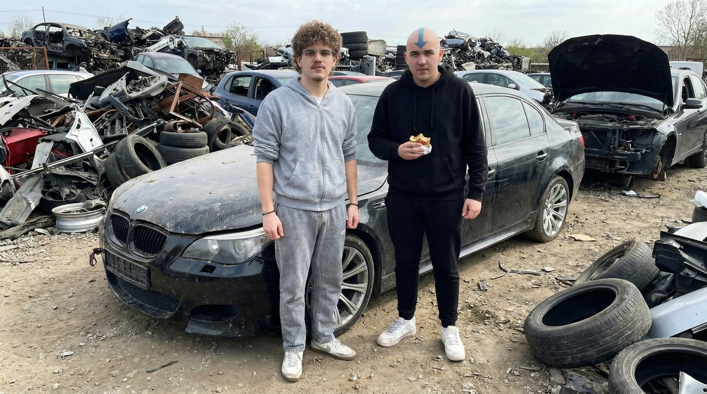

Recepció
Üdvözöljük a Hotel Amar Atallah-ban! A nap 24+1 órájában fogadjuk Önt, hogy bombabiztos foglalást tehessünk lehetővé, persze nem terület, hanem szobafoglalást. Recepciósunk, Al-Bócsa örömmel segít Önnek a tájékozódásban.

Porta
Portásunk a nap 24 órájában védelmet biztosít Ön számára, illetve Dudás bin Dénes az eligazításban is segít szívesen. Keresse őt bizalommal a büfénél.

A kulisszák mögött
Munkatársaink jóban és rosszban is együtt vannak, Al-Bócsa és Dudás bin Dénes együtt mentek új szolgálati járművet vásárolni. Az üzlet sikeres volt, a Hotelhez pedig még időben visszaértek.